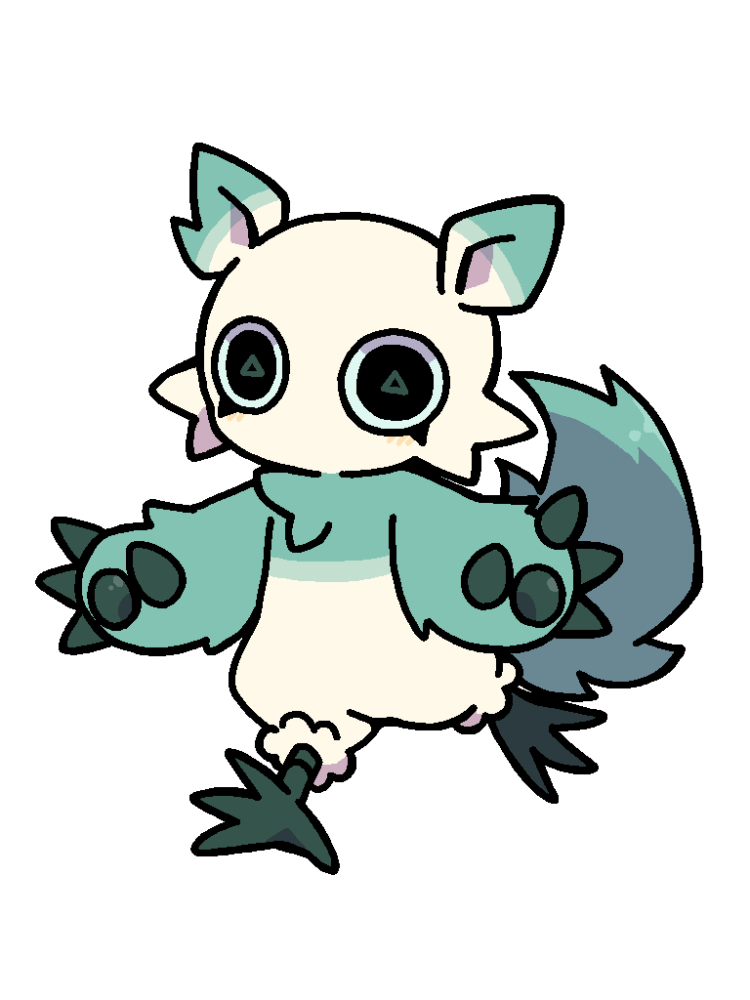

フサフサな毛皮に短い耳、鳥のような足を持つ不思議な生き物。衰弱して倒れていたところをロコに拾われ、現在は彼と一緒に暮らしている。ロコに恩返しがしたくて積極的に彼の手伝いをしているが、体が小さいのでよくドジをしてしまう。言葉を話すことが出来ず「ぷぎゃい」といった変わった鳴き声しか発せない。
【性別】女性 【一人称】？ 【身長】90cm 【好きなもの】マシュマロ入りココア 【苦手なもの】ネズミ / 刃物
←Back